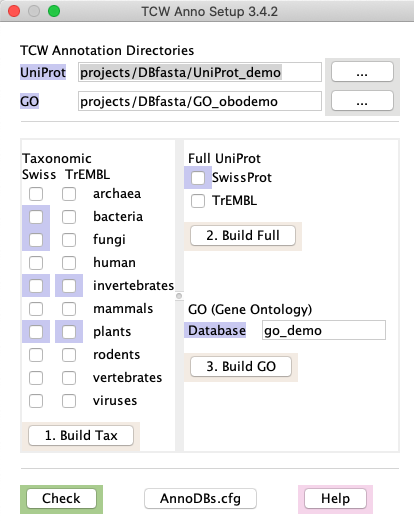

To prepare for annotation with runSingleTCW, it is necessary
to download the databases to compared against. TCW provides support
for downloading the taxonomic and full UniProts
and mapping from the UniProt IDs to GO, KEGG, Pfam, EC, and InterPro.
Tested:
runAS has been tested on Linux, MacOS 10.9 and 10.15.
If you have any problems, please let me know at tcw at agcol.arizona.edu.
Contents:
Terminology:
The term "AnnoDB" refers to any database that will be used for annotation,
i.e. the sequences in TCW will be searched against all AnnoDB databases and the hits stored
in the TCW database for query. For a TCW created with nucleotide sequences, an annoDB may be nucleotide or protein. For
a TCW created with protein sequences, an annoDB can only be protein.
If multiple species are to be compared using multiTCW, it is important they all
use the same set of AnnoDBs and GO database.
Requirements:
The setup uses curl for downloading annoDBs and the GO database.
Note -- if you do not have curl, runAS will still work, though may not be
as reliable.
For mySQL, the command mysqladmin is used, so
you may need to define its path, e.g. on Mac,
alias mysqladmin '/usr/local/mysql/bin/mysqladmin' #tcsh
alias mysqladmin='/usr/local/mysql/bin/mysqladmin' #bash
With MySQL v8, to add the GO database, you may need to set following MySQL variable:
SET GLOBAL local_infile = 1;
Processing steps:
- Create the directory for the downloads and generated FASTA files.
The default location is the TCW sub-directory projects/DBfasta, but it can be put elsewhere.
- Download Taxonomic UniProts ".dat" files and create FASTA files.
- Download full UniProt, remove entries from taxonomic databases, and create FASTA files.
- Create GO database, which contains mappings from UniProt IDs to GO, KEGG, EC, Pfam and InterPro.
- Download go_<date>-termdb-tables.tar.gz.
- Create a local mySQL GO database with the information from this tar file.
- Add information to the local GO database from the .fasta and .dat files in the UniProt directory.
Other databases can be used for annotation, as discussed in using other databases,
but they will not have GO, KEGG, EC, Pfam, or InterPro support.
Typically, all you need to do is make sure you have an internet connection open
and that you have enough disk space (see Memory),
then:
- The "TCW Annotation Directories" define where the files will be put (see Details below);
TCW provides defaults as shown on the right.
- Select the taxonomic databases you want to use, then select Build Tax,
which downloads the respective files and creates FASTA files.
- Select the full databases you want to use, then select Build Full,
which downloads the respective files, creates a subset of the full by removing
all entries found in the downloaded taxonomic databases, and creates a FASTA file.
- Select Build GO, which downloads the GO database,
creates a local mySQL GO database with a mapping of the UniProts from your downloaded
set. This uses the information in HOSTS.cfg.
See the log file for the UniProt and GO processing.
- Select TCW.anno, which writes a file projects/TCW.anno.<date>.
- Run ./runSingleTCW.
- Select Import Anno, a file chooser will popup, select
projects/TCW.anno.<date>.
- Select Options in the annotation section, and select the GO database.
- Now you are ready to Exec Annotate Sequences with the UniProt and GO you
just downloaded.
The TrEMBL Bacteria and Full databases are
very very large (41GB and 61GB as of
Nov 2017), so do not download these unless your really really need them. Also, they take a lot of memory
to process.
| 
|
Note: I have not downloaded the Full TrEMBL UniProt in years; I find it sufficient to
download the SwissProt of all relevant taxonomies and the Full SwissProt database, as these are the best annotation;
then I include the TrEMBL of the most relevant taxonomies.
Check: Selecting this button highlights everything that has been done.
For example, the figure on the upper right shows that the directory
UniProt_Jun2020 has been created and only Archaea SwissProt has been downloaded and processed.
The Check automatically runs on startup.
The download uses curl.
You can get this on most Linux machines with 'sudo yum install curl'.
If you cannot install it, runAS will prompt you as shown on
the right; if you select Continue, it will perform the download with its own Java code,
though it may take longer and is not as robust, i.e. could have potential problems due to network latency, etc.
|
|
Details
The rest of this section provides details:
The default directory for annoDBs is projects/DBfasta.
UniProt directory is where the UniProt files will be downloaded. If the
directory does not exist, it will be created. As shown in the image above, the default
name is UniProt_<date>, though it does not have to be this name.
GO directory is where the GO file will be downloaded. If the directory
does not exist, it will be created. As shown in the image above, the default
name is go_tmp<date>, though it does not have to be this name.
Swiss and TrEMBL headings indicate that selecting
a check box under Swiss will download the SwissProt database for the corresponding
taxonomic database (label to the right). Similarly, selecting the check box
under TrEMBL will download the TrEMBL taxonomic database.
Full UniProt will download the full SwissProt or TrEMBL database.
It expects that you will have downloaded at least one taxonomic database, i.e. the one
that corresponds with your species.
GO (Gene Ontology): a tar file containing the schema and data is downloaded
from http://archive.geneontology.org/.
The most current file is go_daily-termdb-tables.tar.gz
Database: This is the name of the GO database that will be created; you will enter
this name in runSingleTCW.
runAS will not replace an existing downloaded file. If you select Continue
on the prompt on the right, it will skip the download but perform the rest of the processing. This
is necessary if you have (1) run Build Full to create the subset, or (2)
run Build GO to create the GO database, but then download another Taxonomic UniProt;
these two steps need to be re-run.
| 
|
For each of the three download steps, there will be an initial prompt to ensure that you meant to
select the download.
runAS does not remove files that are no longer necessary, which are
the files downloaded from the internet:
- All "dat.gz" files in the UniProt directories, as the information has
been transferred to the FASTA files and GO database.
- The GO directory, as the information has been transferred to the GO database.
These files can be removed, as runSingleTCW
uses the FASTA files in the UniProt directories and the GO mySQL database. However, if you
do not have a space problem, keep them just for insurance.
When UniProt does the monthly update, your downloaded files will no longer available
on their site.
For the FASTA files that you will be using
DIAMOND to search against, you
can gzip them as DIAMOND can search against gzipped files.
To view the current sizes of the UniProt taxonomic divisions and complete database:
- Go to UniProt Downloads.
- In the second line from the top, it says "For downloading complete data sets we recommend using ftp.uniprot.org."
Click the ftp.uniprot.org.
- This brings up the UniProt download directories in a Finder window. You may view it as "Guest".
- Click "Current_release", "knowledgebase". Here you will see "complete" and "taxonomic_divisions".
- View these two directories along with the sizes.
When TCW extracts the sequence into a FASTA file, it is not written in a gzipped format.
Strong suggestions:
- Only download what is relevant!
For example, download both SwissProt and TrEMBL taxonomic databases
for your species of interest, plus any related taxonomies, then only download the full SwissProt.
- Do not perform constant downloads, it is a drain on the UniProt servers.
The UniProts do not change that fast, and it changes 'best' hits in TCW, which can disturb any on-going analysis.
Times: The following shows the times for downloading 2 SwissProt and 1 TrEMBL files
using a ~500 Mbsp download connection and 128Gb of RAM.
curl complete ./projects/DBfasta/UniProt_Aug2019/sp_fungi/uniprot_sprot_fungi.dat.gz 0m:5s
curl complete ./projects/DBfasta/UniProt_Aug2019/sp_plants/uniprot_sprot_plants.dat.gz 0m:6s
curl complete ./projects/DBfasta/UniProt_Aug2019/tr_plants/uniprot_trembl_plants.dat.gz 8m:24s
34,106 written to uniprot_sprot_fungi.fasta 0m:4s (3Mb)
42,597 written to uniprot_sprot_plants.fasta 0m:4s (3Mb)
9,534,192 written to uniprot_trembl_plants.fasta 9m:25s (3Mb)
Time for creating GO database: The following is the times for build the GO database for 4 SwissProt, Full SwissProt, and 2 TrEMBL.
Complete creating GO database go_Aug2019 32m:36s (10Mb)
NOTE: It takes much longer if you have many large TrEMBL taxononic databases downloaded, where it may
take over night.
In order to add GO annotations, a local GO mySQL 'demo' database needs to be created.
- From the TCW_2 directory, execute:
./runAS -d
The "-d" will cause it to enter the demo parameters, as shown on the right.
The highlighted entries already exist. Its only necessary to build the GO database,
which takes about 10 minutes.
- Execute Build GO.
Enter "Confirm" on the first prompt to continue.
The GO tables are available for the demo, i.e. they will not be downloaded. This is evident from the purple GO label.
Building the GO database takes anywhere from 10 to 60 minutes.
| 
|
Details about the Demo setup
In the projects/DBfasta directory, there is the sub-directory UniProt_demo and GO_tmpdemo,
which contains the following:
GO_tmpdemo:
go_daily-termdb-tables.tar.gz
UniProt_demo:
sp_bacteria/ sp_fungi/ sp_plants/ tr_plants/
sp_fullSubset/ sp_invertebrates/ tr_invertebrates/
Each taxonomic directory has a .dat and a .fasta file,
which are very small subsets of the original UniProt taxonomic .dat file.
See Overview for more details.
Why use taxonomic databases instead of the full UniProt
| Go to top |
- TCW refers to the annoDBs by the 'type' and 'taxonomy', e.g. sp_fungi has
a type of 'sp' and a taxonomy of 'fungi'. Within TCW, you can query by taxonomy.
Also, all results will show this information so you can easily see which taxonomic database a hit is from.
The following shows an example:

- You only need annotate against the taxonomies of interest. The bacterial
TrEMBL is especially large and should be left out if not specifically desired.
- The complete UniProt has everything but bacteria. There is an option to download the complete UniProt, then make
a subset to search against that has everything but what is in the taxonomic databases. This will be
referred to as the "Full" database below. In the above figure, "SPful" refers to the SwissProt full subset
database and "TRful" refers to the TrEMBL full subset.
Using other databases for annotation
| Go to top |
NCBI-nr works with TCW. For other databases, you will need to make sure they have a TCW
accepted descriptor line.
Description lines
The description line is the ">" line that describes the subsequent sequence in a FASTA file.
From it, execAnno extracts
- DB type: used in naming the blast output file and is used in
viewSingleTCW to aid
in identifying where the hitID is from.
- hitID: the unique identifier of the hit.
- description: generally the functional description
- species: the species
UniProt:
>sp|Q9V2L2|1A1D_PYRAB Putative 1-ami OS=Pyrococcus abyssi GN=PYRAB00630 PE=3 SV=1v
- For TrEMBL, the first two characters would be 'tr'. The 'sp' or 'tr' are the DB type
- The third entry of the first string is the identifier (e.g. 1A1D_PYRAB)
- The string up to the OS is the description.
- The string after the "OS=" is the species.
NCBI nr
The NCBI-nr database can be downloaded using the following link:
NCBI nr
(ftp.ncbi.nih.gov/blast/db/FASTA).
Zipped, this is 32Gb as of Nov2017.
Using the DIAMOND program can search this database quickly;
however, there will be no GO, KEGG, EC, or Pfam information associated with these hits.
In the summer of 2016, NCBI changed the format of the subject line. TCW can parse the old or new format,
though the recent NCBI-nr file (Oct 2016) has some badly formed entries, which are ignored. The descriptor line
may have multiple entries separated by "CNTL+A"; only the first entry is used.
New format:
>XP_642837.1 hypothetical protein DDB_G0276911 [Dictyostelium discoideum AX4]
- The first entry is the identifier (e.g. XP_642837.1).
Note, there is no longer a way to detect the database origin within the file, hence, the DB type will be the generic 'PR' for protein.
- The text from the first space to the first "[" is the description.
- The text within the "[]" is the species.
Old format:
>gi|66818355|ref|XP_642837.1| hypothetical protein DDB_G0276911 [Dictyostelium discoideum AX4]
- The 'gi' is the DB type.
- The fourth entry of the first string is the identifier (e.g. XP_642837.1)
- The text from the last "|" to the first "[" is the description.
- The text within the "[]" is the species.
Generic:
If you have a file other than UniProt or nr, make the descriptor names as follows:
>CC|ID description OS=species
- CC is the type code, and will be used as the DB type in TCW.
- ID is the unique identifier
- Everything up to the OS is the description
- Everything after the OS is the species
You want the CC type code + taxonomy (entered through the runSingleTCW interface)
to be unique for each annoDB. The type code + first three letters of the taxonomy are used to
name the blast output, and is also used in viewSingleTCW to easily determine
what annoDB a hit came from.
Entering this data into runSingleTCW
| Go to top |

The AnnoDBs can be entered using the "Add" button, where the taxonomy is defined.
Alternatively, use the "Import AnnoDBs" to add the databases from an existing sTCW.cfg
file or from the TCW.anno file created from selecting "TCW.anno" on runAS. Note,
the full path of the AnnoDBs is not shown in this image.
The GO database is defined in the "Options" menu.
Go to Top
{kind=link}
{kind=link}